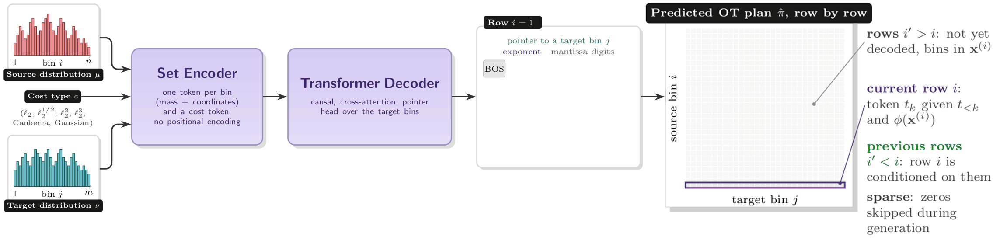
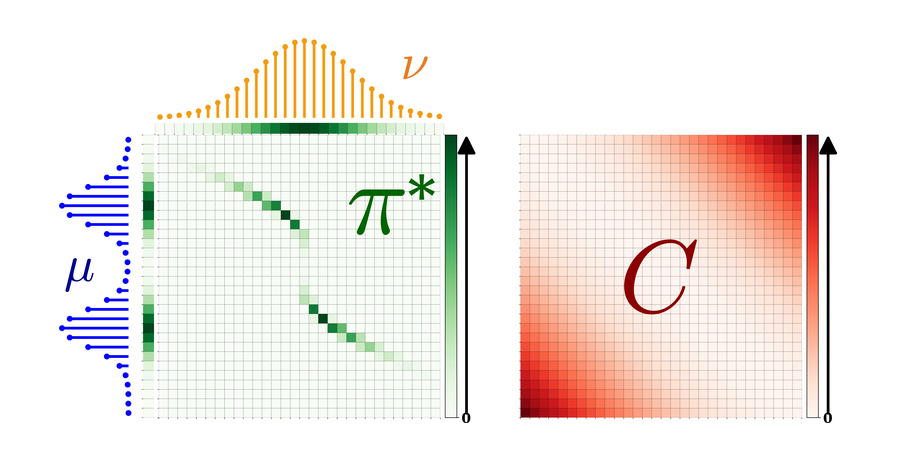
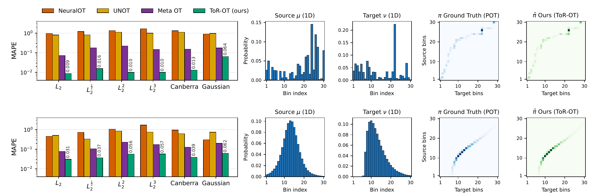
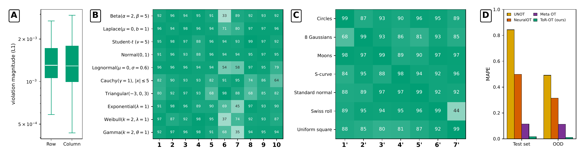
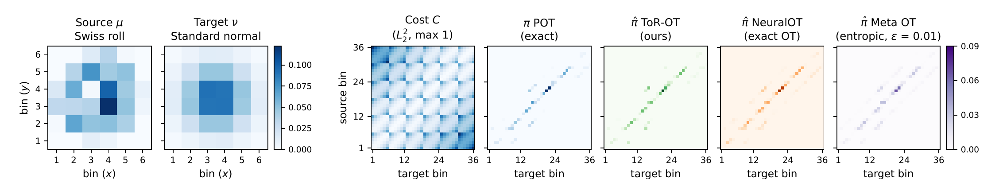
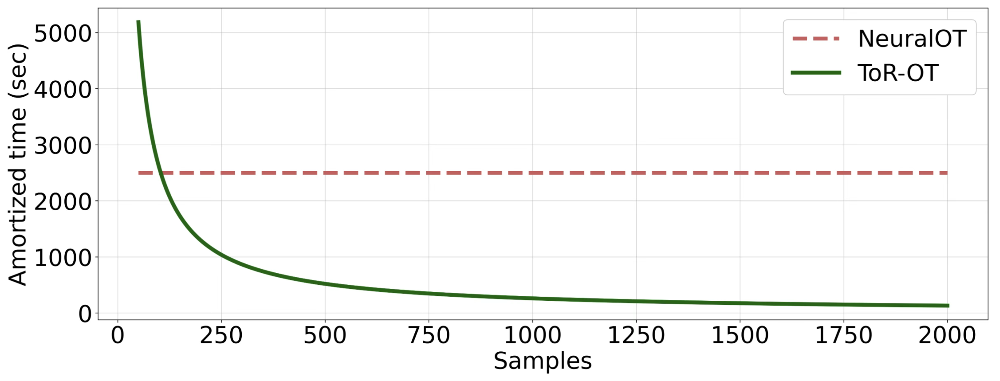

ToR-OT generates the plan one row at a time, and each row is conditioned on the previous rows. For row \(i\), a set encoder embeds the cost type, the source bins \(i, \dots, n\), and every target bin \(j\) with its capacity after the previous rows, \({r_j = \nu_j - \textstyle\sum_{i' < i} \hat{\pi}_{i'j}}\). A causal Transformer decoder then emits the nonzero entries of the row. Each entry is six tokens: a pointer to a target bin, an exponent, and four mantissa digits.

A discrete OT instance: source and target measures, the cost matrix \(C\), and the optimal plan \(\pi^*\). An optimal plan exists with at most \(n + m - 1\) nonzeros, so ToR-OT predicts only the nonzero entries, and a full plan takes \(O(n + m)\) tokens instead of \(nm\) entries.

Test set (top row) and out-of-distribution set (bottom row) at \(n = m = 30\) bins. Left: mean absolute percentage error (MAPE) of each method on six cost types, each scored against the solution of the problem it solves. A single ToR-OT model has the lowest mean error on every cost: 64–95% below Meta OT, the strongest baseline, on the test set, and 60–75% below it on the OOD set. Right: an example pair with the exact plan from POT and the plan predicted by ToR-OT.

(A) Marginal violations on the test set, with no hard constraint enforcement: the median is about 0.1% of the total mass, and no instance exceeds 1%. (B) Relative MAPE improvement over Meta OT under the \(\ell_2^2\) cost, for 100 of the 144 pairs of 1D OOD distributions. Over all 144 pairs, ToR-OT is more accurate on 134, with a median improvement of 91%. Columns: 1 Beta, 2 Laplace, 3 Student's t, 4 Normal, 5 Lognormal, 6 Cauchy, 7 Triangular, 8 Exponential, 9 Weibull, 10 Gamma. (C) The same for all 49 pairs of 2D OOD distributions; ToR-OT is more accurate on every pair, with a median improvement of 93%. Columns: 1' Circles, 2' 8 Gaussians, 3' Moons, 4' S-curve, 5' Standard normal, 6' Swiss roll, 7' Uniform square. (D) Mean MAPE of every method on the 2D test and OOD sets.

A 2D OOD pair (Swiss roll → Standard normal, \(\ell_2^2\) cost) on a \(6 \times 6\) grid, with the plans over the 36 flattened bins. The 2D model uses the same architecture and training recipe as the 1D model; each bin is embedded from its 2D coordinate. ToR-OT's plan follows the sparse structure of the exact plan.
Let \(K_i\) be the number of nonzero entries in row \(i\) of the plan. Row \(i\) is decoded as \(6K_i + 2\) tokens: six per entry, plus BOS and EOS. An optimal plan exists with at most \(n + m - 1\) nonzeros, so \(\sum_i K_i \le n + m - 1\), and the whole plan takes \[ \sum_{i=1}^{n} \left(6K_i + 2\right) \;=\; 6\sum_{i=1}^{n} K_i + 2n \;=\; O(n + m) \] tokens, instead of the \(nm\) entries of a dense plan.
Self-attention over row \(i\) costs \(O(K_i^2)\), so row-wise decoding costs \(O\big(\sum_i K_i^2\big)\). The total number of nonzeros is always \(O(n + m)\), but how they spread over the rows sets the cost. For \(n = m\):
| Sparsity pattern | Tokens \(\sum_i K_i\) | Self-attention \(\sum_i K_i^2\) |
|---|---|---|
| Typical, short rows: \(K_i = O(1)\) | \(O(n)\) | \(O(n)\), linear |
| Worst case, one dense row: \(K_1 = O(n)\), \(K_{i > 1} = O(1)\) | \(O(n)\) | \(O(n^2)\) |
Optimal plans are sparse and their rows stay short in practice, so the inference cost is dominated by the model's fixed per-token cost, not by the quadratic size of the dense plan.

Amortized time per problem, with ToR-OT's pretraining cost spread over the number of problems solved. NeuralOT trains a new network for every pair (about 2,600 s each), while ToR-OT generates a plan in 1.09 s on one A100 GPU. Counting training time, ToR-OT becomes cheaper than NeuralOT after fewer than 100 problems. This is evidence for amortization relative to per-instance neural baselines, not a replacement for classical OT solvers.
@inproceedings{jaenmarquez2026torot,
title={Learning Optimal Transport Plans Via Autoregressive Token Regression},
author={Jaen Marquez, Ivan and Chytas, Sotirios Panagiotis and Singh, Vikas},
booktitle={The Fortieth Annual Conference on Neural Information Processing Systems},
year={2026},
url={https://openreview.net/forum?id=8isvAhvCFo}
}
![[Poster]](https://neurips.cc/media/PosterPDFs/NeurIPS%202026/155066.png){kind=link}